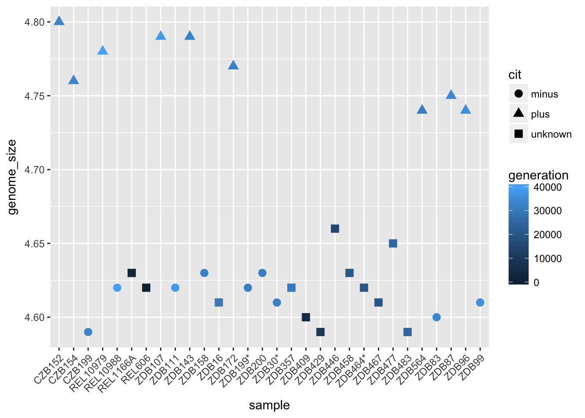
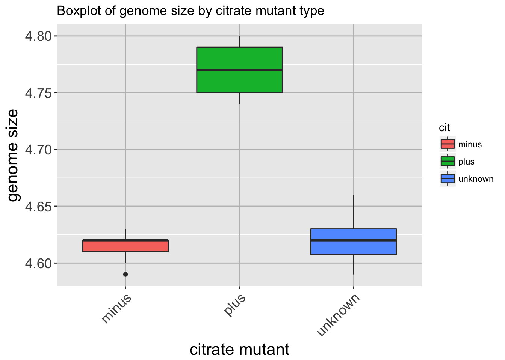

Data Visualization
Data Carpentry contributors
Learning Objectives
- Describe the features of R’s plotting packages (i.e. know the difference between base R and ggplot plotting approaches).
- Create simple scatterplots, histograms, and boxplots in R.
- Customize the aesthetics of an existing plot.
- Build complex and customized plots from data in a data frame.
- Export plots from RStudio to standard graphical file formats.
Basic plots in R
The mathematician Richard Hamming once said, “The purpose of computing is insight, not numbers”, and the best way to develop insight is often to visualize data. Visualization deserves an entire lecture (or course) of its own, but we can explore a few features of R’s plotting packages.
When we are working with large sets of numbers it can be useful to display that information graphically. R has a number of built-in tools for basic graph types such as hisotgrams, scatter plots, bar charts, boxplots and much more. We’ll test a few of these out here on the genome_size vector from our metadata.
genome_size <- metadata$genome_sizeScatterplot
Let’s start with a scatterplot. A scatter plot provides a graphical view of the relationship between two sets of numbers. We don’t have a variable in our metadata that is a continous variable, so there is nothing to plot it against but we can plot the values against their index values just to demonstrate the function.
plot(genome_size)
Each point represents a clone and the value on the x-axis is the clone index in the file, where the values on the y-axis correspond to the genome size for the clone. For any plot you can customize many features of your graphs (fonts, colors, axes, titles) through graphic options For example, we can change the shape of the data point using pch.
plot(genome_size, pch=8)
We can add a title to the plot by assigning a string to main:
plot(genome_size, pch=8, main="Scatter plot of genome sizes")
Histogram
Another way to visualize the distribution of genome sizes is to use a histogram, we can do this buy using the hist function:
hist(genome_size)
Boxplot
Using additional information from our metadata, we can use plots to compare values between the different citrate mutant status using a boxplot. A boxplot provides a graphical view of the median, quartiles, maximum, and minimum of a data set.
# Boxplot
boxplot(genome_size ~ cit, metadata)
Similar to the scatterplots above, we can pass in arguments to add in extras like plot title, axis labels and colors.
boxplot(genome_size ~ cit, metadata, col=c("pink","purple", "darkgrey"),
main="Average expression differences between celltypes", ylab="Expression")
Advanced figures (ggplot2)
More recently, R users have moved away from base graphic options and towards a plotting package called ggplot2 that adds a lot of functionality to the basic plots seen above. The syntax takes some getting used to but it’s extremely powerful and flexible. We can start by re-creating some of the above plots but using ggplot functions to get a feel for the syntax.
ggplot is best used on data in the data.frame form, so we will will work with metadata for the following figures. Let’s start by loading the ggplot2 library.
library(ggplot2)## Warning: package 'ggplot2' was built under R version 3.2.5The ggplot() function is used to initialize the basic graph structure, then we add to it. The basic idea is that you specify different parts of the plot, and add them together using the + operator.
We will start with a blank plot and will find that you will get an error, because you need to add layers.
ggplot(metadata) # note the error Geometric objects are the actual marks we put on a plot. Examples include:
- points (
geom_point, for scatter plots, dot plots, etc) - lines (
geom_line, for time series, trend lines, etc) - boxplot (
geom_boxplot, for, well, boxplots!)
A plot must have at least one geom; there is no upper limit. You can add a geom to a plot using the + operator
ggplot(metadata) +
geom_point() # note what happens hereEach type of geom usually has a required set of aesthetics to be set, and usually accepts only a subset of all aesthetics –refer to the geom help pages to see what mappings each geom accepts. Aesthetic mappings are set with the aes() function. Examples include:
- position (i.e., on the x and y axes)
- color (“outside” color)
- fill (“inside” color) shape (of points)
- linetype
- size
To start, we will add position for the x- and y-axis since geom_point requires mappings for x and y, all others are optional.
ggplot(metadata) +
geom_point(aes(x = sample, y= genome_size))
The labels on the x-axis are quite hard to read. To do this we need to add an additional theme layer. The ggplot2 theme system handles non-data plot elements such as:
- Axis labels
- Plot background
- Facet label backround
- Legend appearance
There are built-in themes we can use, or we can adjust specific elements. For our figure we will change the x-axis labels to be plotted on a 45 degree angle with a small horizontal shift to avoid overlap. We will also add some additional aesthetics by mapping them to other variables in our dataframe. For example, the color of the points will reflect the number of generations and the shape will reflect citrate mutant status. The size of the points can be adjusted within the geom_point but does not need to be included in aes() since the value is not mapping to a variable.
ggplot(metadata) +
geom_point(aes(x = sample, y= genome_size, color = generation, shape = cit), size = rel(3.0)) +
theme(axis.text.x = element_text(angle=45, hjust=1))
Histogram
To plot a histogram we require another geometric object geom_bar, which requires a statistical transformation. Some plot types (such as scatterplots) do not require transformations, each point is plotted at x and y coordinates equal to the original value. Other plots, such as boxplots, histograms, prediction lines etc. need to be transformed, and usually has a default statistic that can be changed via the stat_bin argument.
ggplot(metadata) +
geom_bar(aes(x = genome_size))Try plotting with the default value and compare it to the plot using the binwidth values. How do they differ?
ggplot(metadata) +
geom_bar(aes(x = genome_size), stat = "bin", binwidth=0.05)## Warning: `geom_bar()` no longer has a `binwidth` parameter. Please use
## `geom_histogram()` instead.
Boxplot
Now that we have all the required information on let’s try plotting a boxplot similar to what we had done using the base plot functions at the start of this lesson. We can add some additional layers to include a plot title and change the axis labels. Explore the code below and all the different layers that we have added to understand what each layer contributes to the final graphic.
ggplot(metadata) +
geom_boxplot(aes(x = cit, y = genome_size, fill = cit)) +
ggtitle('Boxplot of genome size by citrate mutant type') +
xlab('citrate mutant') +
ylab('genome size') +
theme(panel.grid.major = element_line(size = .5, color = "grey"),
axis.text.x = element_text(angle=45, hjust=1),
axis.title = element_text(size = rel(1.5)),
axis.text = element_text(size = rel(1.25)))
Writing figures to file
There are two ways in which figures and plots can be output to a file (rather than simply displaying on screen). The first (and easiest) is to export directly from the RStudio ‘Plots’ panel, by clicking on Export when the image is plotted. This will give you the option of png or pdf and selecting the directory to which you wish to save it to. The second option is to use R functions in the console, allowing you the flexibility to specify parameters to dictate the size and resolution of the output image. Some of the more popular formats include pdf(), png.
Initialize a plot that will be written directly to a file using pdf, png etc. Within the function you will need to specify a name for your image, and the with and height (optional). Then create a plot using the usual functions in R. Finally, close the file using the dev.off() function. There are also bmp, tiff, and jpeg functions, though the jpeg function has proven less stable than the others.
pdf("figure/boxplot.pdf")
ggplot(example_data) +
geom_boxplot(aes(x = cit, y =....) +
ggtitle(...) +
xlab(...) +
ylab(...) +
theme(panel.grid.major = element_line(...),
axis.text.x = element_text(...),
axis.title = element_text(...),
axis.text = element_text(...)
dev.off()Resources:
We have only scratched the surface here. To learn more, see the ggplot reference site, and Winston Chang’s excellent Cookbook for R site. Though slightly out of date, ggplot2: Elegant Graphics for Data Anaysis is still the definative book on this subject. Much of the material here was adpapted from Introduction to R graphics with ggplot2 Tutorial at IQSS.
Data Carpentry,
2017. License. Contributing.
Questions? Feedback?
Please file
an issue on GitHub.
On
Twitter: @datacarpentry